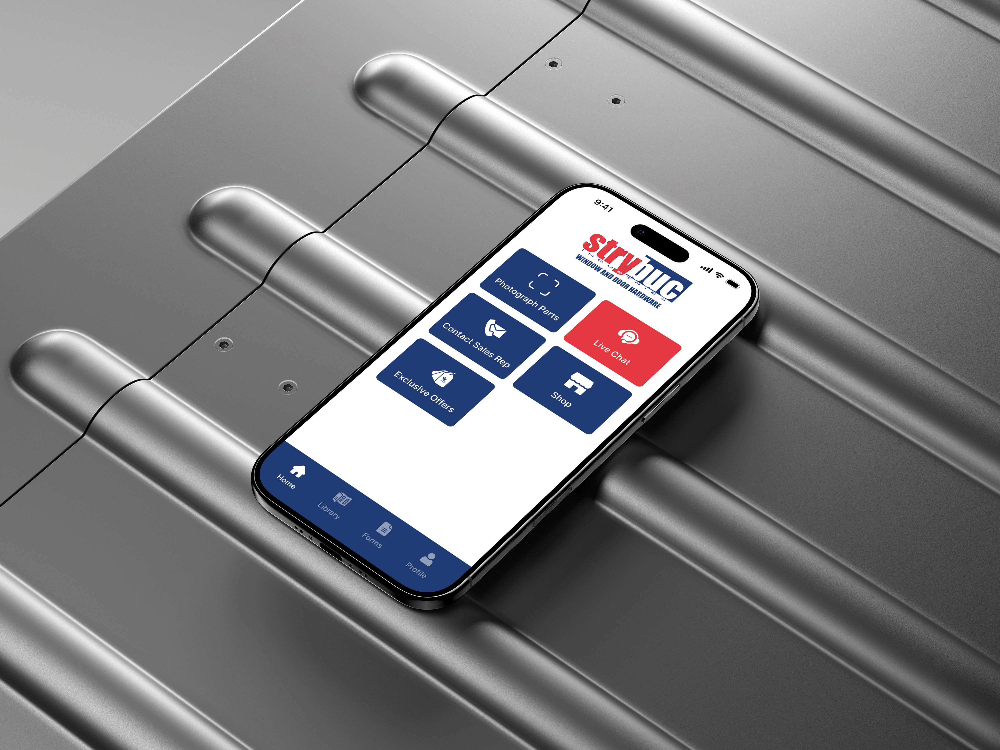
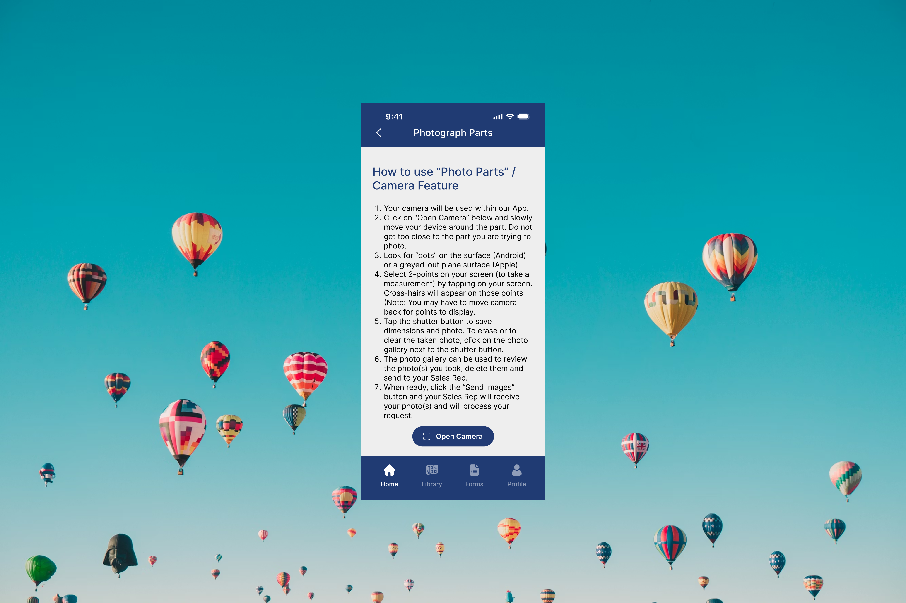
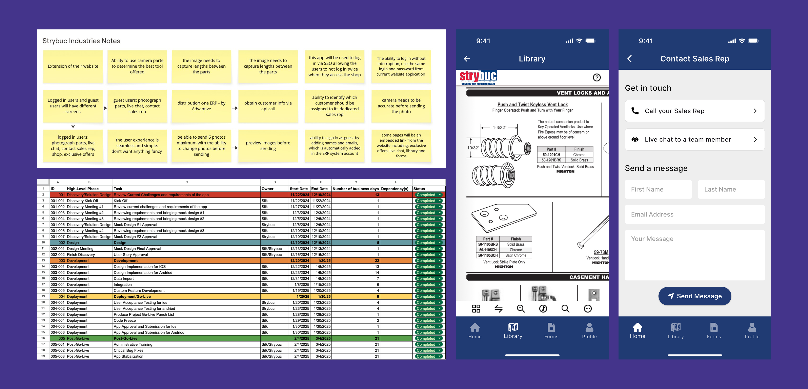
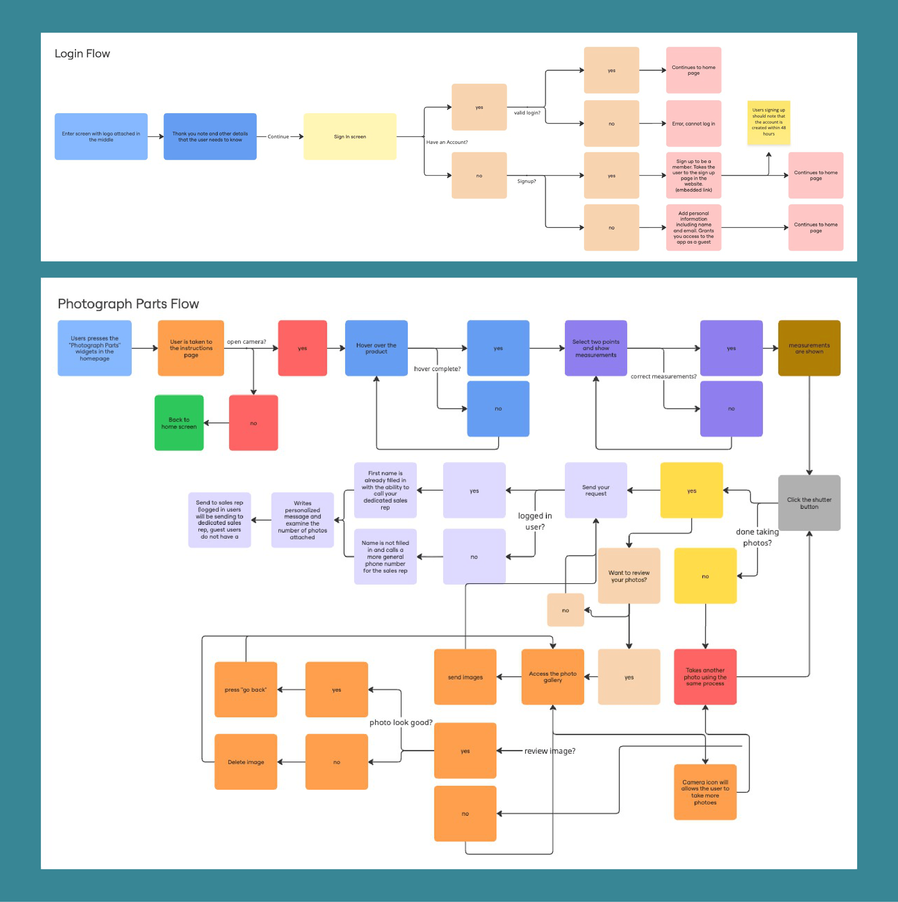
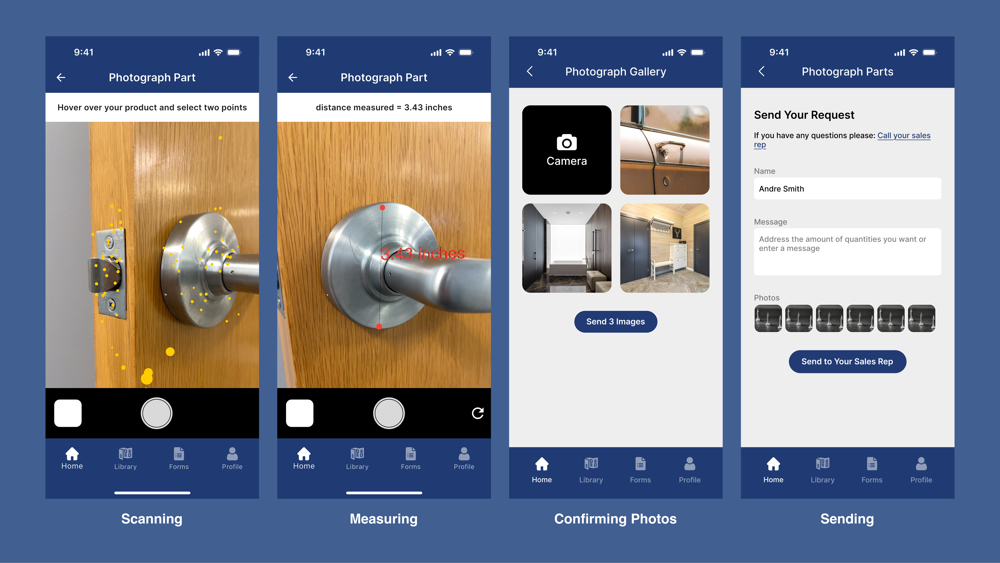

Feature #1
Photograph Parts Workflow
User Story
“Rather than hiding premium features, I used a 'disabled' state for guests. This creates a 'velvet rope' effect, showcasing the value of membership to encourage account creation.”
Guest
Logged In

By integrating Augmented Reality (AR) measurement tools, users can capture dimensionally accurate photos of their hardware. These images are instantly routed to Strybuc sales representatives, who use the data to suggest the exact replacement options—transforming a complex support ticket into a seamless sales opportunity.
Documented every detail during discovery calls, from technical constraints to workflow needs and user expectations
Making the process of sending part(s) using AR seamless and easy to understand.
Understand pain points and validate solutions through rigorous user testing.
Feature #2
Understanding the business requirements
User Story
"As a Contractor on-site, I need to capture dimensionally accurate photos of broken hardware using AR tools so that a sales representative can identify the exact specs and provide me with the correct replacement options"

To build Strybuc's mobile application effectively, it was crucial for me to deeply understand the business requirements from the very beginning. I documented every detail during discovery calls — from technical constraints to workflow needs and user expectations — ensuring no requirement was overlooked. As the project manager, I provided weekly and daily updates to keep the client aligned with progress and upcoming milestones.
To deliver on time and with accuracy, I created clear user stories and a detailed project timeline, allowing me to track dependencies, manage development phases, and ensure every task stayed on schedule.
Feature #3
Designing a clear workflow
User Story
"As a Field Contractor, I need a guided, step-by-step workflow that helps me capture precise AR measurements and photos"

Creating a detailed user flow was essential. By mapping every step—from pressing the camera button to sending the request—I ensured that the experience remained simple, predictable, and aligned with Strybuc's operational needs. This user flow became the backbone of the mobile application's design and functionality, ensuring that both customer experience and sales team efficiency dramatically improved.
To address the original problem, the redesigned app needed to:
Feature #4
Testing
Since accurate measurements were crucial to this feature, user testing, especially on both Android and iPhone devices, were crucial.

Creating the first prototype for the Photograph Parts feature quickly revealed one of the biggest challenges of the entire project. Because this tool relied on augmented reality to capture precise measurements, the design itself wasn't the only concern—the success of the feature depended heavily on technical accuracy in development.
The camera needed to understand depth, distance, and positioning to generate reliable measurements from one point to another. As I iterated through the prototype, I realized that even small UI decisions directly impacted how the AR logic behaved. This required continuous back-and-forth with the development team overseas, reviewing builds after hours, troubleshooting measurement inconsistencies, and aligning the business goals with the realities of AR technology. Through close collaboration, rapid prototyping, and constant communication, we were able to refine both the user experience and the measurement accuracy to create a seamless flow from the customer's camera to the sales representative.
Final Delivery and
Submission
After 4 months, I delivered Strybuc Industries' first fully redesigned mobile application for both iOS and Android. What began as a simple request to "refresh the app" quickly evolved into a deeply technical product challenge, especially for the Photograph Parts AR feature.